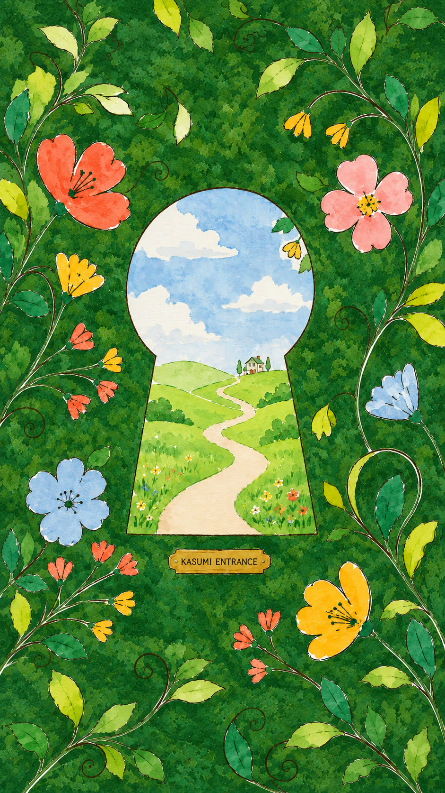
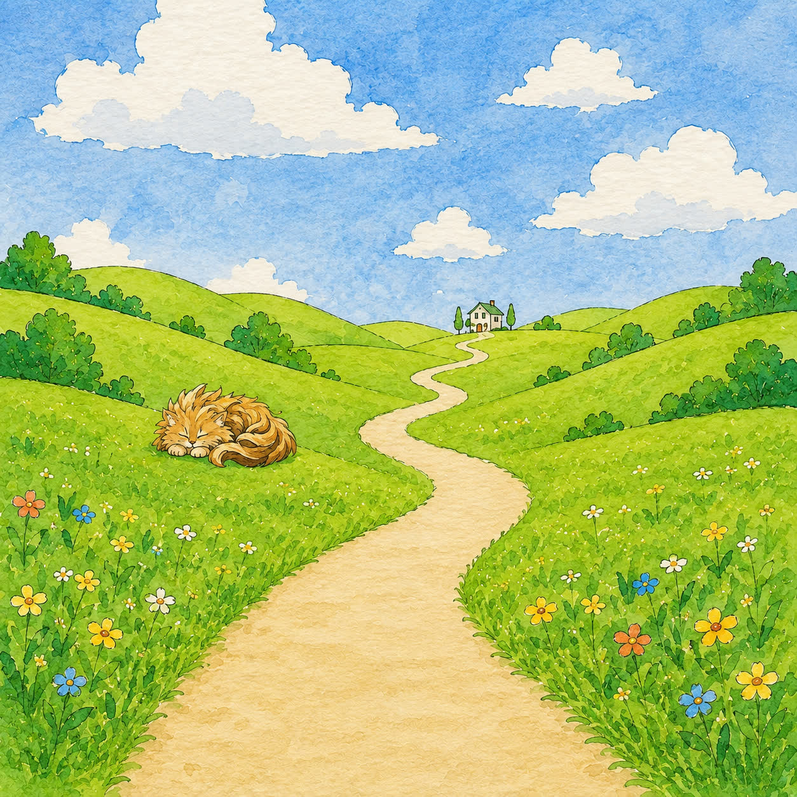
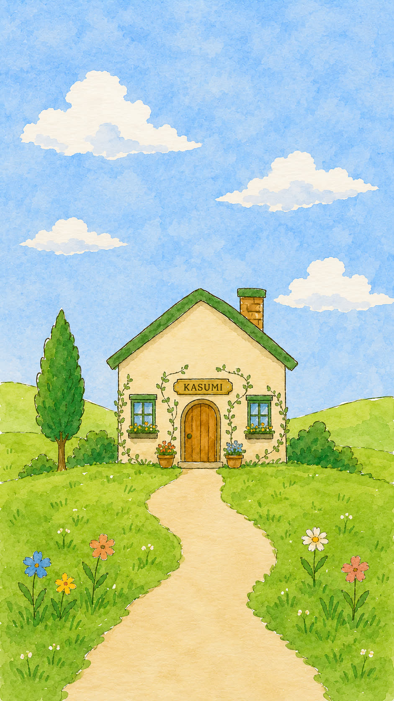
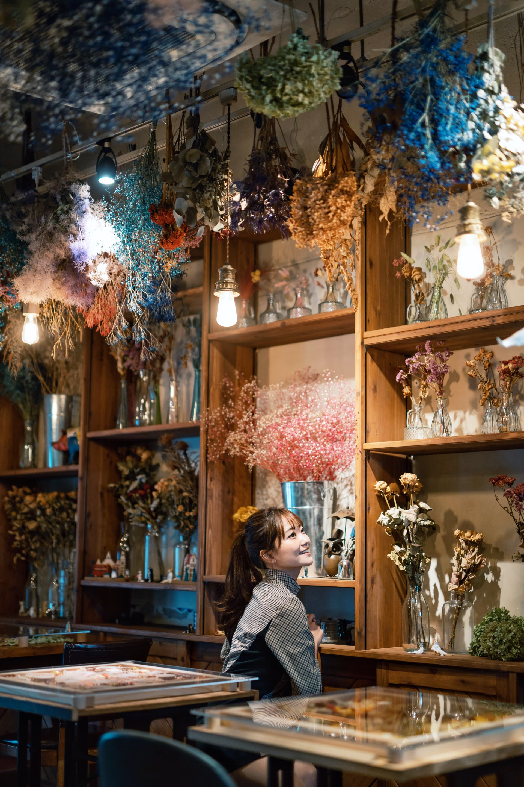
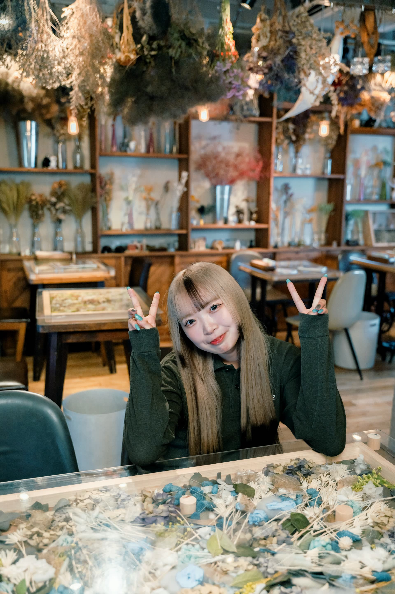
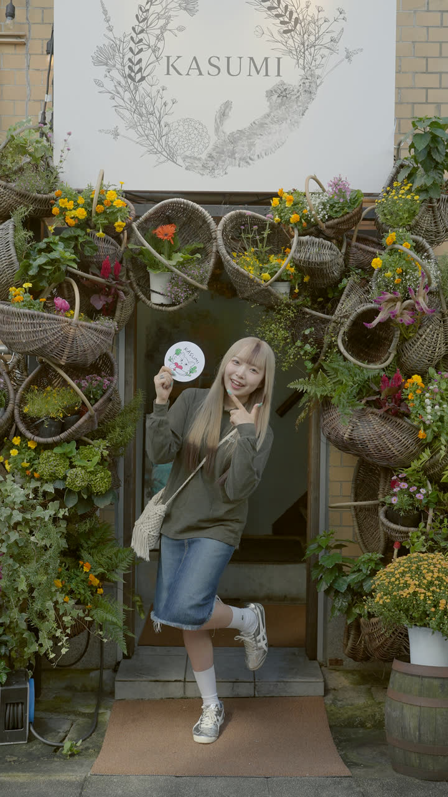
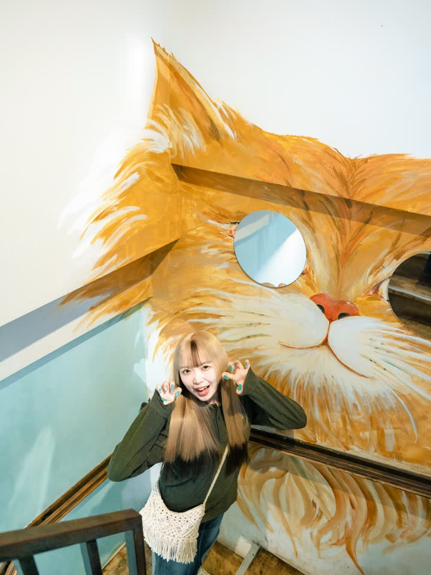
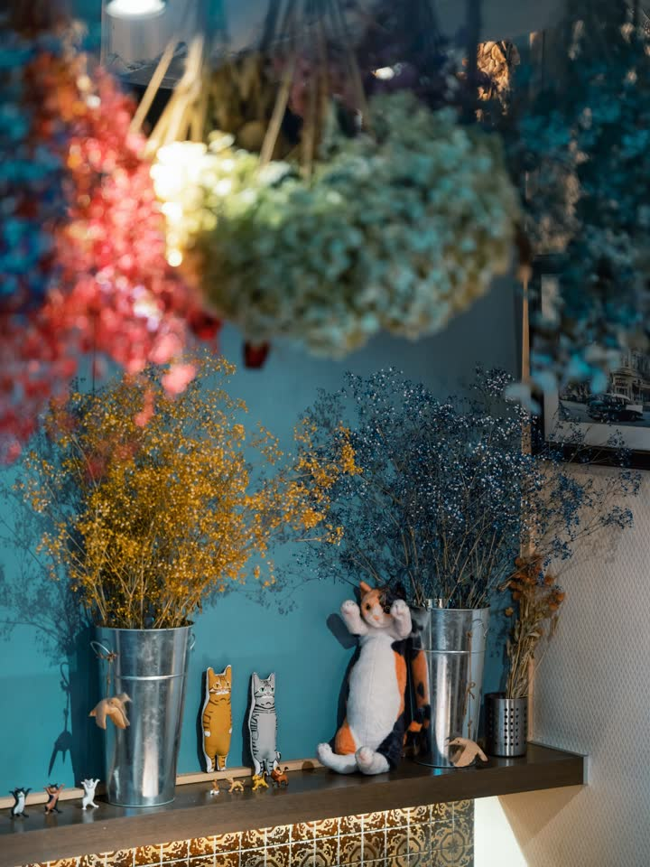
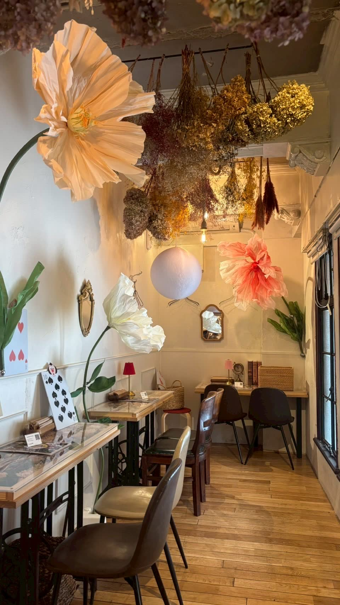
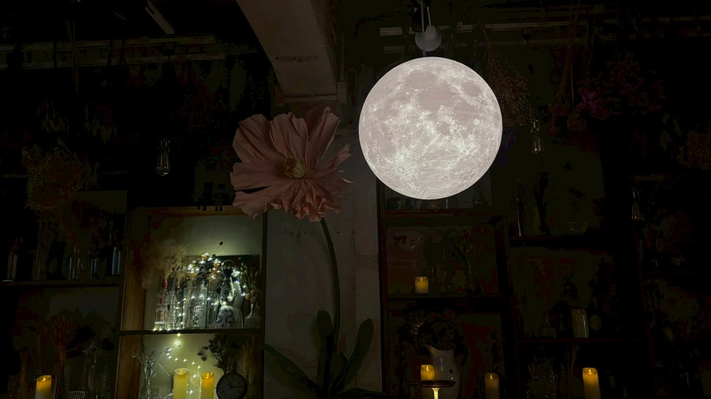

鍵穴の向こうへ。
小道の先に、お店があります。
看板猫のヤイチが、お出迎え。
扉を開けて、店内へ。
スクロールして進む ↓
Kyoto / Shijo-Kawaramachi
四条河原町から徒歩3分。天井いっぱいのドライフラワーの下で、朝のモーニングから夜カフェまで、KASUMIの一日をどうぞ。
メニューを見る →
Concept
KASUMIは1階の専用入口から階段を上がった2階にあるお店です。踊り場を抜けて店内に入ると、天井から壁一面まで、色とりどりのドライフラワーが広がります。



Hours
朝8:00から夜23:00まで、定休日なし。フードは20:30まで、ランチ・ディナーの垣根なくずっと同じグランドメニューをご注文いただけます。
定休日はありません。ご予約は承っておりませんので、そのままお越しください。

20:30から、夜カフェ。

Access